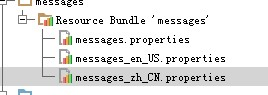

spring4.0整合了validation验证功能
今天翻译博客时 无意中发现的小知识点,
源地址:http://jinnianshilongnian.iteye.com/blog/1990081?page=2#comments
Bean Validation 1.1当前实现是hibernate validator 5，且spring4才支持。接下来我们从以下几个方法讲解Bean Validation 1.1，当然不一定是新特性：
- 集成Bean Validation 1.1到SpringMVC
- 分组验证、分组顺序及级联验证
- 消息中使用EL表达式
- 方法参数/返回值验证
- 自定义验证规则
- 类级别验证器
- 脚本验证器
- cross-parameter，跨参数验证
- 混合类级别验证器和跨参数验证器
- 组合多个验证注解
- 本地化
因为大多数时候验证都配合web框架使用，而且很多朋友都咨询过如分组/跨参数验证，所以本文介绍下这些，且是和SpringMVC框架集成的例子，其他使用方式（比如集成到JPA中）可以参考其官方文档：
规范：http://beanvalidation.org/1.1/spec/
hibernate validator文档：http://hibernate.org/validator/
1、集成Bean Validation 1.1到SpringMVC
1.1、项目搭建
首先添加hibernate validator 5依赖：

- <dependency>
- <groupId>org.hibernate</groupId>
- <artifactId>hibernate-validator</artifactId>
- <version>5.0.2.Final</version>
- </dependency>
如果想在消息中使用EL表达式，请确保EL表达式版本是 2.2或以上，如使用Tomcat6，请到Tomcat7中拷贝相应的EL jar包到Tomcat6中。
- <dependency>
- <groupId>javax.el</groupId>
- <artifactId>javax.el-api</artifactId>
- <version>2.2.4</version>
- <scope>provided</scope>
- </dependency>
请确保您使用的Web容器有相应版本的el jar包。
对于其他POM依赖请下载附件中的项目参考。
1.2、spring MVC配置文件（spring-mvc.xml）：
- <!-- 指定自己定义的validator -->
- <mvc:annotation-driven validator="validator"/>
- <!-- 以下 validator ConversionService 在使用 mvc:annotation-driven 会 自动注册-->
- <bean id="validator" class="org.springframework.validation.beanvalidation.LocalValidatorFactoryBean">
- <property name="providerClass" value="org.hibernate.validator.HibernateValidator"/>
- <!-- 如果不加默认到 使用classpath下的 ValidationMessages.properties -->
- <property name="validationMessageSource" ref="messageSource"/>
- </bean>
- <!-- 国际化的消息资源文件（本系统中主要用于显示/错误消息定制） -->
- <bean id="messageSource" class="org.springframework.context.support.ReloadableResourceBundleMessageSource">
- <property name="basenames">
- <list>
- <!-- 在web环境中一定要定位到classpath 否则默认到当前web应用下找 -->
- <value>classpath:messages</value>
- <value>classpath:org/hibernate/validator/ValidationMessages</value>
- </list>
- </property>
- <property name="useCodeAsDefaultMessage" value="false"/>
- <property name="defaultEncoding" value="UTF-8"/>
- <property name="cacheSeconds" value="60"/>
- </bean>
此处主要把bean validation的消息查找委托给spring的messageSource。
1.3、实体验证注解：
- public class User implements Serializable {
- @NotNull(message = "{user.id.null}")
- private Long id;
- @NotEmpty(message = "{user.name.null}")
- @Length(min = 5, max = 20, message = "{user.name.length.illegal}")
- @Pattern(regexp = "[a-zA-Z]{5,20}", message = "{user.name.illegal}")
- private String name;
- @NotNull(message = "{user.password.null}")
- private String password;
- }
对于验证规则可以参考官方文档，或者《第七章 注解式控制器的数据验证、类型转换及格式化》。
1.4、错误消息文件messages.properties：
- user.id.null=用户编号不能为空
- user.name.null=用户名不能为空
- user.name.length.illegal=用户名长度必须在5到20之间
- user.name.illegal=用户名必须是字母
- user.password.null=密码不能为空
1.5、控制器
- @Controller
- public class UserController {
- @RequestMapping("/save")
- public String save(@Valid User user, BindingResult result) {
- if(result.hasErrors()) {
- return "error";
- }
- return "success";
- }
- }
1.6、错误页面：
- <spring:hasBindErrors name="user">
- <c:if test="${errors.fieldErrorCount > 0}">
- 字段错误：<br/>
- <c:forEach items="${errors.fieldErrors}" var="error">
- <spring:message var="message" code="${error.code}" arguments="${error.arguments}" text="${error.defaultMessage}"/>
- ${error.field}------${message}<br/>
- </c:forEach>
- </c:if>
- <c:if test="${errors.globalErrorCount > 0}">
- 全局错误：<br/>
- <c:forEach items="${errors.globalErrors}" var="error">
- <spring:message var="message" code="${error.code}" arguments="${error.arguments}" text="${error.defaultMessage}"/>
- <c:if test="${not empty message}">
- ${message}<br/>
- </c:if>
- </c:forEach>
- </c:if>
- </spring:hasBindErrors>
大家以后可以根据这个做通用的错误消息显示规则。比如我前端页面使用validationEngine显示错误消息，那么我可以定义一个tag来通用化错误消息的显示：showFieldError.tag。
1.7、测试
输入如：http://localhost:9080/spring4/save?name=123 ， 我们得到如下错误：
- name------用户名必须是字母
- name------用户名长度必须在5到20之间
- password------密码不能为空
- id------用户编号不能为空
基本的集成就完成了。
如上测试有几个小问题：
1、错误消息顺序，大家可以看到name的错误消息顺序不是按照书写顺序的，即不确定；
2、我想显示如：用户名【zhangsan】必须在5到20之间；其中我们想动态显示：用户名、min，max；而不是写死了；
3、我想在修改的时候只验证用户名，其他的不验证怎么办。
接下来我们挨着试试吧。
2、分组验证及分组顺序
如果我们想在新增的情况验证id和name，而修改的情况验证name和password，怎么办？ 那么就需要分组了。
首先定义分组接口：
- public interface First {
- }
- public interface Second {
- }
分组接口就是两个普通的接口，用于标识，类似于Java.io.Serializable。
接着我们使用分组接口标识实体：
- public class User implements Serializable {
- @NotNull(message = "{user.id.null}", groups = {First.class})
- private Long id;
- @Length(min = 5, max = 20, message = "{user.name.length.illegal}", groups = {Second.class})
- @Pattern(regexp = "[a-zA-Z]{5,20}", message = "{user.name.illegal}", groups = {Second.class})
- private String name;
- @NotNull(message = "{user.password.null}", groups = {First.class, Second.class})
- private String password;
- }
验证时使用如：
- @RequestMapping("/save")
- public String save(@Validated({Second.class}) User user, BindingResult result) {
- if(result.hasErrors()) {
- return "error";
- }
- return "success";
- }
即通过@Validate注解标识要验证的分组；如果要验证两个的话，可以这样@Validated({First.class, Second.class})。
接下来我们来看看通过分组来指定顺序；还记得之前的错误消息吗？ user.name会显示两个错误消息，而且顺序不确定；如果我们先验证一个消息；如果不通过再验证另一个怎么办？可以通过@GroupSequence指定分组验证顺序：
- @GroupSequence({First.class, Second.class, User.class})
- public class User implements Serializable {
- private Long id;
- @Length(min = 5, max = 20, message = "{user.name.length.illegal}", groups = {First.class})
- @Pattern(regexp = "[a-zA-Z]{5,20}", message = "{user.name.illegal}", groups = {Second.class})
- private String name;
- private String password;
- }
通过@GroupSequence指定验证顺序：先验证First分组，如果有错误立即返回而不会验证Second分组，接着如果First分组验证通过了，那么才去验证Second分组，最后指定User.class表示那些没有分组的在最后。这样我们就可以实现按顺序验证分组了。
另一个比较常见的就是级联验证：
如：
- public class User {
- @Valid
- @ConvertGroup(from=First.class, to=Second.class)
- private Organization o;
- }
1、级联验证只要在相应的字段上加@Valid即可，会进行级联验证；@ConvertGroup的作用是当验证o的分组是First时，那么验证o的分组是Second，即分组验证的转换。
3、消息中使用EL表达式
假设我们需要显示如：用户名[NAME]长度必须在[MIN]到[MAX]之间，此处大家可以看到，我们不想把一些数据写死，如NAME、MIN、MAX；此时我们可以使用EL表达式。
如：
- @Length(min = 5, max = 20, message = "{user.name.length.illegal}", groups = {First.class})
错误消息：
- user.name.length.illegal=用户名长度必须在{min}到{max}之间
其中我们可以使用{验证注解的属性}得到这些值；如{min}得到@Length中的min值；其他的也是类似的。
到此，我们还是无法得到出错的那个输入值，如name=zhangsan。此时就需要EL表达式的支持，首先确定引入EL jar包且版本正确。然后使用如：
- user.name.length.illegal=用户名[${validatedValue}]长度必须在5到20之间
使用如EL表达式：${validatedValue}得到输入的值，如zhangsan。当然我们还可以使用如${min > 1 ? '大于1' : '小于等于1'}，及在EL表达式中也能拿到如@Length的min等数据。
另外我们还可以拿到一个java.util.Formatter类型的formatter变量进行格式化：
- ${formatter.format("%04d", min)}
4、方法参数/返回值验证
这个可以参考《Spring3.1 对Bean Validation规范的新支持(方法级别验证) 》，概念是类似的，具体可以参考Bean Validation 文档。
5、自定义验证规则
有时候默认的规则可能还不够，有时候还需要自定义规则，比如屏蔽关键词验证是非常常见的一个功能，比如在发帖时帖子中不允许出现admin等关键词。
1、定义验证注解
- package com.sishuok.spring4.validator;
- import javax.validation.Constraint;
- import javax.validation.Payload;
- import java.lang.annotation.Documented;
- import java.lang.annotation.Retention;
- import java.lang.annotation.Target;
- import static java.lang.annotation.ElementType.*;
- import static java.lang.annotation.RetentionPolicy.*;
- /**
- * <p>User: Zhang Kaitao
- * <p>Date: 13-12-15
- * <p>Version: 1.0
- */
- @Target({ FIELD, METHOD, PARAMETER, ANNOTATION_TYPE })
- @Retention(RUNTIME)
- //指定验证器
- @Constraint(validatedBy = ForbiddenValidator.class)
- @Documented
- public @interface Forbidden {
- //默认错误消息
- String message() default "{forbidden.word}";
- //分组
- Class<?>[] groups() default { };
- //负载
- Class<? extends Payload>[] payload() default { };
- //指定多个时使用
- @Target({ FIELD, METHOD, PARAMETER, ANNOTATION_TYPE })
- @Retention(RUNTIME)
- @Documented
- @interface List {
- Forbidden[] value();
- }
- }
2、 定义验证器
- package com.sishuok.spring4.validator;
- import org.hibernate.validator.internal.engine.constraintvalidation.ConstraintValidatorContextImpl;
- import org.springframework.beans.factory.annotation.Autowired;
- import org.springframework.context.ApplicationContext;
- import org.springframework.util.StringUtils;
- import javax.validation.ConstraintValidator;
- import javax.validation.ConstraintValidatorContext;
- import java.io.Serializable;
- /**
- * <p>User: Zhang Kaitao
- * <p>Date: 13-12-15
- * <p>Version: 1.0
- */
- public class ForbiddenValidator implements ConstraintValidator<Forbidden, String> {
- private String[] forbiddenWords = {"admin"};
- @Override
- public void initialize(Forbidden constraintAnnotation) {
- //初始化，得到注解数据
- }
- @Override
- public boolean isValid(String value, ConstraintValidatorContext context) {
- if(StringUtils.isEmpty(value)) {
- return true;
- }
- for(String word : forbiddenWords) {
- if(value.contains(word)) {
- return false;//验证失败
- }
- }
- return true;
- }
- }
验证器中可以使用spring的依赖注入，如注入：@Autowired private ApplicationContext ctx;
3、使用
- public class User implements Serializable {
- @Forbidden()
- private String name;
- }
4、当我们在提交name中含有admin的时候会输出错误消息：
- forbidden.word=您输入的数据中有非法关键词
问题来了，哪个词是非法的呢？bean validation 和 hibernate validator都没有提供相应的api提供这个数据，怎么办呢？通过跟踪代码，发现一种不是特别好的方法：我们可以覆盖org.hibernate.validator.internal.metadata.descriptor.ConstraintDescriptorImpl实现（即复制一份代码放到我们的src中），然后覆盖buildAnnotationParameterMap方法；
- private Map<String, Object> buildAnnotationParameterMap(Annotation annotation) {
- ……
- //将Collections.unmodifiableMap( parameters );替换为如下语句
- return parameters;
- }
即允许这个数据可以修改；然后在ForbiddenValidator中：
- for(String word : forbiddenWords) {
- if(value.contains(word)) {
- ((ConstraintValidatorContextImpl)context).getConstraintDescriptor().getAttributes().put("word", word);
- return false;//验证失败
- }
- }
通过((ConstraintValidatorContextImpl)context).getConstraintDescriptor().getAttributes().put("word", word);添加自己的属性；放到attributes中的数据可以通过${} 获取。然后消息就可以变成：
- forbidden.word=您输入的数据中有非法关键词【{word}】
这种方式不是很友好，但是可以解决我们的问题。
典型的如密码、确认密码的场景，非常常用；如果没有这个功能我们需要自己写代码来完成；而且经常重复自己。接下来看看bean validation 1.1如何实现的。
6、类级别验证器
6.1、定义验证注解
- package com.sishuok.spring4.validator;
- import javax.validation.Constraint;
- import javax.validation.Payload;
- import javax.validation.constraints.NotNull;
- import java.lang.annotation.Documented;
- import java.lang.annotation.Retention;
- import java.lang.annotation.Target;
- import static java.lang.annotation.ElementType.*;
- import static java.lang.annotation.RetentionPolicy.*;
- /**
- * <p>User: Zhang Kaitao
- * <p>Date: 13-12-15
- * <p>Version: 1.0
- */
- @Target({ TYPE, ANNOTATION_TYPE})
- @Retention(RUNTIME)
- //指定验证器
- @Constraint(validatedBy = CheckPasswordValidator.class)
- @Documented
- public @interface CheckPassword {
- //默认错误消息
- String message() default "";
- //分组
- Class<?>[] groups() default { };
- //负载
- Class<? extends Payload>[] payload() default { };
- //指定多个时使用
- @Target({ FIELD, METHOD, PARAMETER, ANNOTATION_TYPE })
- @Retention(RUNTIME)
- @Documented
- @interface List {
- CheckPassword[] value();
- }
- }
6.2、 定义验证器
- package com.sishuok.spring4.validator;
- import com.sishuok.spring4.entity.User;
- import org.springframework.util.StringUtils;
- import javax.validation.ConstraintValidator;
- import javax.validation.ConstraintValidatorContext;
- /**
- * <p>User: Zhang Kaitao
- * <p>Date: 13-12-15
- * <p>Version: 1.0
- */
- public class CheckPasswordValidator implements ConstraintValidator<CheckPassword, User> {
- @Override
- public void initialize(CheckPassword constraintAnnotation) {
- }
- @Override
- public boolean isValid(User user, ConstraintValidatorContext context) {
- if(user == null) {
- return true;
- }
- //没有填密码
- if(!StringUtils.hasText(user.getPassword())) {
- context.disableDefaultConstraintViolation();
- context.buildConstraintViolationWithTemplate("{password.null}")
- .addPropertyNode("password")
- .addConstraintViolation();
- return false;
- }
- if(!StringUtils.hasText(user.getConfirmation())) {
- context.disableDefaultConstraintViolation();
- context.buildConstraintViolationWithTemplate("{password.confirmation.null}")
- .addPropertyNode("confirmation")
- .addConstraintViolation();
- return false;
- }
- //两次密码不一样
- if (!user.getPassword().trim().equals(user.getConfirmation().trim())) {
- context.disableDefaultConstraintViolation();
- context.buildConstraintViolationWithTemplate("{password.confirmation.error}")
- .addPropertyNode("confirmation")
- .addConstraintViolation();
- return false;
- }
- return true;
- }
- }
其中我们通过disableDefaultConstraintViolation禁用默认的约束；然后通过buildConstraintViolationWithTemplate(消息模板)/addPropertyNode(所属属性)/addConstraintViolation定义我们自己的约束。
6.3、使用
- @CheckPassword()
- public class User implements Serializable {
- }
放到类头上即可。
7、通过脚本验证
- @ScriptAssert(script = "_this.password==_this.confirmation", lang = "javascript", alias = "_this", message = "{password.confirmation.error}")
- public class User implements Serializable {
- }
通过脚本验证是非常简单而且强大的，lang指定脚本语言（请参考javax.script.ScriptEngineManager JSR-223），alias是在脚本验证中User对象的名字，但是大家会发现一个问题：错误消息怎么显示呢？ 在springmvc 中会添加到全局错误消息中，这肯定不是我们想要的，我们改造下吧。
7.1、定义验证注解
- package com.sishuok.spring4.validator;
- import org.hibernate.validator.internal.constraintvalidators.ScriptAssertValidator;
- import java.lang.annotation.Documented;
- import java.lang.annotation.Retention;
- import java.lang.annotation.Target;
- import javax.validation.Constraint;
- import javax.validation.Payload;
- import static java.lang.annotation.ElementType.TYPE;
- import static java.lang.annotation.RetentionPolicy.RUNTIME;
- @Target({ TYPE })
- @Retention(RUNTIME)
- @Constraint(validatedBy = {PropertyScriptAssertValidator.class})
- @Documented
- public @interface PropertyScriptAssert {
- String message() default "{org.hibernate.validator.constraints.ScriptAssert.message}";
- Class<?>[] groups() default { };
- Class<? extends Payload>[] payload() default { };
- String lang();
- String script();
- String alias() default "_this";
- String property();
- @Target({ TYPE })
- @Retention(RUNTIME)
- @Documented
- public @interface List {
- PropertyScriptAssert[] value();
- }
- }
和ScriptAssert没什么区别，只是多了个property用来指定出错后给实体的哪个属性。
7.2、验证器
- package com.sishuok.spring4.validator;
- import javax.script.ScriptException;
- import javax.validation.ConstraintDeclarationException;
- import javax.validation.ConstraintValidator;
- import javax.validation.ConstraintValidatorContext;
- import com.sishuok.spring4.validator.PropertyScriptAssert;
- import org.hibernate.validator.constraints.ScriptAssert;
- import org.hibernate.validator.internal.util.Contracts;
- import org.hibernate.validator.internal.util.logging.Log;
- import org.hibernate.validator.internal.util.logging.LoggerFactory;
- import org.hibernate.validator.internal.util.scriptengine.ScriptEvaluator;
- import org.hibernate.validator.internal.util.scriptengine.ScriptEvaluatorFactory;
- import static org.hibernate.validator.internal.util.logging.Messages.MESSAGES;
- public class PropertyScriptAssertValidator implements ConstraintValidator<PropertyScriptAssert, Object> {
- private static final Log log = LoggerFactory.make();
- private String script;
- private String languageName;
- private String alias;
- private String property;
- private String message;
- public void initialize(PropertyScriptAssert constraintAnnotation) {
- validateParameters( constraintAnnotation );
- this.script = constraintAnnotation.script();
- this.languageName = constraintAnnotation.lang();
- this.alias = constraintAnnotation.alias();
- this.property = constraintAnnotation.property();
- this.message = constraintAnnotation.message();
- }
- public boolean isValid(Object value, ConstraintValidatorContext constraintValidatorContext) {
- Object evaluationResult;
- ScriptEvaluator scriptEvaluator;
- try {
- ScriptEvaluatorFactory evaluatorFactory = ScriptEvaluatorFactory.getInstance();
- scriptEvaluator = evaluatorFactory.getScriptEvaluatorByLanguageName( languageName );
- }
- catch ( ScriptException e ) {
- throw new ConstraintDeclarationException( e );
- }
- try {
- evaluationResult = scriptEvaluator.evaluate( script, value, alias );
- }
- catch ( ScriptException e ) {
- throw log.getErrorDuringScriptExecutionException( script, e );
- }
- if ( evaluationResult == null ) {
- throw log.getScriptMustReturnTrueOrFalseException( script );
- }
- if ( !( evaluationResult instanceof Boolean ) ) {
- throw log.getScriptMustReturnTrueOrFalseException(
- script,
- evaluationResult,
- evaluationResult.getClass().getCanonicalName()
- );
- }
- if(Boolean.FALSE.equals(evaluationResult)) {
- constraintValidatorContext.disableDefaultConstraintViolation();
- constraintValidatorContext
- .buildConstraintViolationWithTemplate(message)
- .addPropertyNode(property)
- .addConstraintViolation();
- }
- return Boolean.TRUE.equals( evaluationResult );
- }
- private void validateParameters(PropertyScriptAssert constraintAnnotation) {
- Contracts.assertNotEmpty( constraintAnnotation.script(), MESSAGES.parameterMustNotBeEmpty( "script" ) );
- Contracts.assertNotEmpty( constraintAnnotation.lang(), MESSAGES.parameterMustNotBeEmpty( "lang" ) );
- Contracts.assertNotEmpty( constraintAnnotation.alias(), MESSAGES.parameterMustNotBeEmpty( "alias" ) );
- Contracts.assertNotEmpty( constraintAnnotation.property(), MESSAGES.parameterMustNotBeEmpty( "property" ) );
- Contracts.assertNotEmpty( constraintAnnotation.message(), MESSAGES.parameterMustNotBeEmpty( "message" ) );
- }
- }
和之前的类级别验证器类似，就不多解释了，其他代码全部拷贝自org.hibernate.validator.internal.constraintvalidators.ScriptAssertValidator。
7.3、使用
- @PropertyScriptAssert(property = "confirmation", script = "_this.password==_this.confirmation", lang = "javascript", alias = "_this", message = "{password.confirmation.error}")
和之前的区别就是多了个property，用来指定出错时给哪个字段。 这个相对之前的类级别验证器更通用一点。
8、cross-parameter，跨参数验证
直接看示例；
8.1、首先注册MethodValidationPostProcessor，起作用请参考《Spring3.1 对Bean Validation规范的新支持(方法级别验证) 》
- <bean class="org.springframework.validation.beanvalidation.MethodValidationPostProcessor">
- <property name="validator" ref="validator"/>
- </bean>
8.2、Service
- @Validated
- @Service
- public class UserService {
- @CrossParameter
- public void changePassword(String password, String confirmation) {
- }
- }
通过@Validated注解UserService表示该类中有需要进行方法参数/返回值验证； @CrossParameter注解方法表示要进行跨参数验证；即验证password和confirmation是否相等。
8.3、验证注解
- package com.sishuok.spring4.validator;
- //省略import
- @Constraint(validatedBy = CrossParameterValidator.class)
- @Target({ METHOD, CONSTRUCTOR, ANNOTATION_TYPE })
- @Retention(RUNTIME)
- @Documented
- public @interface CrossParameter {
- String message() default "{password.confirmation.error}";
- Class<?>[] groups() default { };
- Class<? extends Payload>[] payload() default { };
- }
8.4、验证器
- package com.sishuok.spring4.validator;
- //省略import
- @SupportedValidationTarget(ValidationTarget.PARAMETERS)
- public class CrossParameterValidator implements ConstraintValidator<CrossParameter, Object[]> {
- @Override
- public void initialize(CrossParameter constraintAnnotation) {
- }
- @Override
- public boolean isValid(Object[] value, ConstraintValidatorContext context) {
- if(value == null || value.length != 2) {
- throw new IllegalArgumentException("must have two args");
- }
- if(value[0] == null || value[1] == null) {
- return true;
- }
- if(value[0].equals(value[1])) {
- return true;
- }
- return false;
- }
- }
其中@SupportedValidationTarget(ValidationTarget.PARAMETERS)表示验证参数； value将是参数列表。
8.5、使用
- @RequestMapping("/changePassword")
- public String changePassword(
- @RequestParam("password") String password,
- @RequestParam("confirmation") String confirmation, Model model) {
- try {
- userService.changePassword(password, confirmation);
- } catch (ConstraintViolationException e) {
- for(ConstraintViolation violation : e.getConstraintViolations()) {
- System.out.println(violation.getMessage());
- }
- }
- return "success";
- }
调用userService.changePassword方法，如果验证失败将抛出ConstraintViolationException异常，然后得到ConstraintViolation，调用getMessage即可得到错误消息；然后到前台显示即可。
从以上来看，不如之前的使用方便，需要自己对错误消息进行处理。 下一节我们也写个脚本方式的跨参数验证器。
9、混合类级别验证器和跨参数验证器
9.1、验证注解
- package com.sishuok.spring4.validator;
- //省略import
- @Constraint(validatedBy = {
- CrossParameterScriptAssertClassValidator.class,
- CrossParameterScriptAssertParameterValidator.class
- })
- @Target({ TYPE, FIELD, PARAMETER, METHOD, CONSTRUCTOR, ANNOTATION_TYPE })
- @Retention(RUNTIME)
- @Documented
- public @interface CrossParameterScriptAssert {
- String message() default "error";
- Class<?>[] groups() default { };
- Class<? extends Payload>[] payload() default { };
- String script();
- String lang();
- String alias() default "_this";
- String property() default "";
- ConstraintTarget validationAppliesTo() default ConstraintTarget.IMPLICIT;
- }
此处我们通过@Constraint指定了两个验证器，一个类级别的，一个跨参数的。validationAppliesTo指定为ConstraintTarget.IMPLICIT，表示隐式自动判断。
9.2、验证器
请下载源码查看
9.3、使用
9.3.1、类级别使用
- @CrossParameterScriptAssert(property = "confirmation", script = "_this.password==_this.confirmation", lang = "javascript", alias = "_this", message = "{password.confirmation.error}")
指定property即可，其他和之前的一样。
9.3.2、跨参数验证
- @CrossParameterScriptAssert(script = "args[0] == args[1]", lang = "javascript", alias = "args", message = "{password.confirmation.error}")
- public void changePassword(String password, String confirmation) {
- }
通过args[0]==args[1] 来判断是否相等。
这样，我们的验证注解就自动适应两种验证规则了。
10、组合验证注解
有时候，可能有好几个注解需要一起使用，此时就可以使用组合验证注解
- @Target({ FIELD})
- @Retention(RUNTIME)
- @Documented
- @NotNull(message = "{user.name.null}")
- @Length(min = 5, max = 20, message = "{user.name.length.illegal}")
- @Pattern(regexp = "[a-zA-Z]{5,20}", message = "{user.name.length.illegal}")
- @Constraint(validatedBy = { })
- public @interface Composition {
- String message() default "";
- Class<?>[] groups() default { };
- Class<? extends Payload>[] payload() default { };
- }
这样我们验证时只需要：
- @Composition()
- private String name;
简洁多了。
11、本地化
即根据不同的语言选择不同的错误消息显示。
1、本地化解析器
- <bean id="localeResolver" class="org.springframework.web.servlet.i18n.CookieLocaleResolver">
- <property name="cookieName" value="locale"/>
- <property name="cookieMaxAge" value="-1"/>
- <property name="defaultLocale" value="zh_CN"/>
- </bean>
此处使用cookie存储本地化信息，当然也可以选择其他的，如Session存储。
2、设置本地化信息的拦截器
- <mvc:interceptors>
- <bean class="org.springframework.web.servlet.i18n.LocaleChangeInterceptor">
- <property name="paramName" value="language"/>
- </bean>
- </mvc:interceptors>
即请求参数中通过language设置语言。
3、消息文件

4、 浏览器输入
http://localhost:9080/spring4/changePassword?password=1&confirmation=2&language=en_US
到此，我们已经完成大部分Bean Validation的功能实验了。对于如XML配置、编程式验证API的使用等对于我们使用SpringMVC这种web环境用处不大，所以就不多介绍了，有兴趣可以自己下载官方文档学习